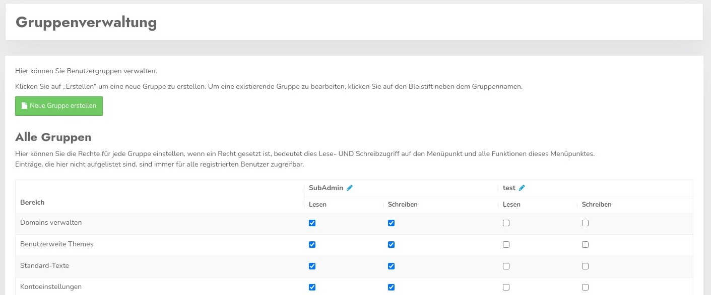
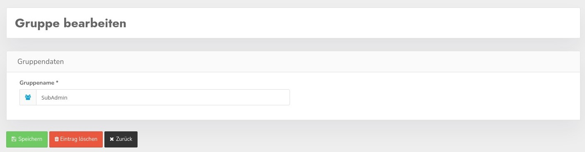

Über die Gruppen können Zugriffsrechte auf alle Bereiche innerhalb des CCM19 Bereichs definiert werden.

Sie können für jede Gruppe definieren auf welche Menüpunkt in Ihrem Bereich User dieser Gruppe Lese und/oder Schreibrechte haben.
Setzen Sie dazu einfach die Häkchen und klicken Sie unter der Tabelle auf speichern, die Rechte übertragen sich dann automatisch auf die zugehörigen Benutzer.
Sie können den Namen jeder Gruppe bearbeiten und jederzeit ändern.
